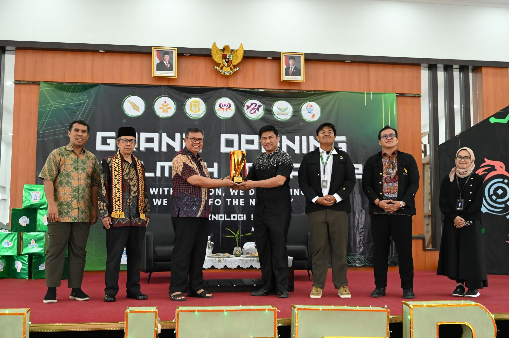

Berita Terbaru ITERA
Kunjungan Industri

Seminar Kesehatan Mental

Itera dan RS Airan Raya Gelar Seminar Kesehatan Mental, Lantik 70 Pengurus Kelas TPB
Pembukaan LITERA 2025
Pembukaan LITERA 2025 Ajak Mahasiswa Peduli dengan Pembangunan Berkelanjutan